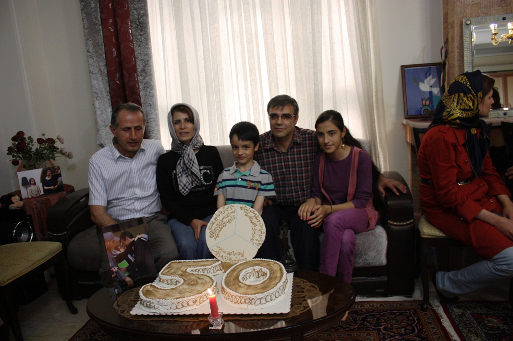
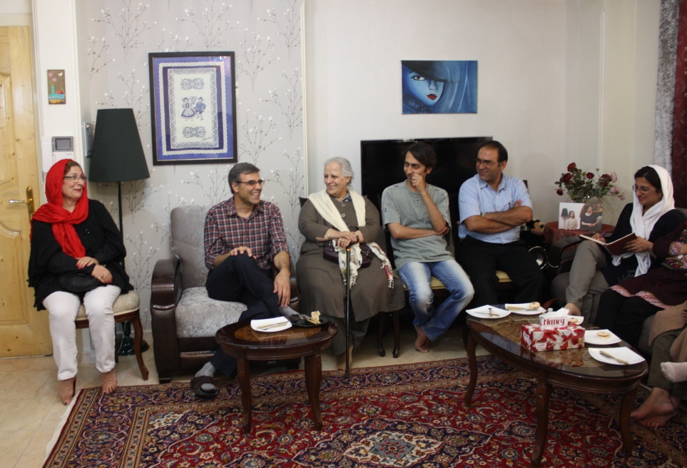

|
|

برگزاری جشن تولد پنجاه سالگی نسرین ستوده در غیاب او
پنج شنبه16 خرداد 1392
تا قانون خانواده برابر: روز سه شنبه چهاردهم خرداد ماه امسال عده ای از فعالین جنبش زنان و دوستان نسرین ستوده در خانه وی گرد هم آمدند تا تولد 50 سالگی نسرین ستوده را جشن بگیرند.

فعالان جنبش زنان با شرکت در این مراسم که مانند سه سال گذشته بدون حضور نسرین ستوده برگزار شد، نشان دادند که همچنان به یاد او هستند و از مقاومت این وکیل ارزشمند و همراهی خانواده محترم او قدردانی می کنند.

در این مراسم رضاخندان همسر نسرین ستوده درباره وضعیت نسرین توضیحاتی داد. وی گفت : بعد از اعتصاب غذای نسرین در سال گذشته ملاقات ها کمی مرتب شده و بچه ها هفته ای یک بار در دادسرا با نسرین ملاقات حضوری دارند.
یکشنبه ها هم خودمان می رویم . نسرین وضعیتش خوب است و به بچه های جنبش زنان علاقه دارد.
نسرین این روزها توصیه می کند که بچه ها تندروی نکنند. با این که زندان خاصیتش این است که کسی که به زندان می رود مواضع شدیدتری می گیرد ولی نسرین آخرین بار می گفت خودتان را کنترل کنید و تندروی نکنید.
نسرین در زندان مطالعه می کند عید هم که با مرخصی اش موافقت نشده بود خیلی ناراحت بود . این که بعد از سه سال عید به او مرخصی ندهند خیلی برایش سخت بود. اوایل خیلی تهدید می کردند که مرخصی نخواهند داد اما در نهایت موافقت کردند.
حالا دیگر بعد از اعتصاب غذا این حداقل ها را رعایت می کنند. تیم قبلی این کار را نمی کرد ولی به محض اعتصاب غذا این چیزهای کوچک را پذیرفته اند .

رضا خندان در پایان از مهمانان تشکر کرد و گفت از شما ممنونیم برای این که سومین سالی است که در تولد نسرین شرکت کردید و برای بقیه مناسبت های دیگر هم حضور داشتید. شاید تشکر کردن موضوعیت نداشته باشد چون شما بخشی از این کار را در راستای نظرات و عقاید خود انجام می دهید اما ما به نوبه خود همیشه ممنون هستیم.
در پایان مراسم، فرزندان و دوستان نسرین شمع کیک تولد 50 سالگی نسرین را خاموش کردند و دیدار با آرزوی سلامت و آزادی همه زندانیان عقیدتی به پایان رسید.